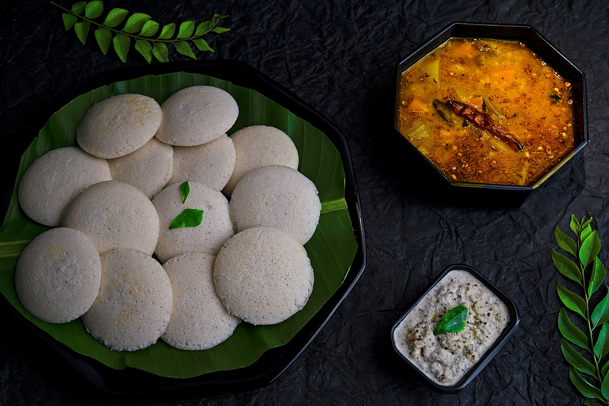

Idli Recipe

Ingridients
- Idli Ingredient 1
- Idli Ingredient 2
- Idli Ingredient 3
-
How to Make Soft Idli
-
firstly, in a large bowl soak 1 cup urad dal for 2 hours
-
also soak 2 cup of idli rice for hours.
-
after1 hour of soaking of urad dal, drain off the water and transfer to grinder.
-
grind for 45 minutes adding water as required. use dal soaked water foe grinding, as it helps in fermentation.